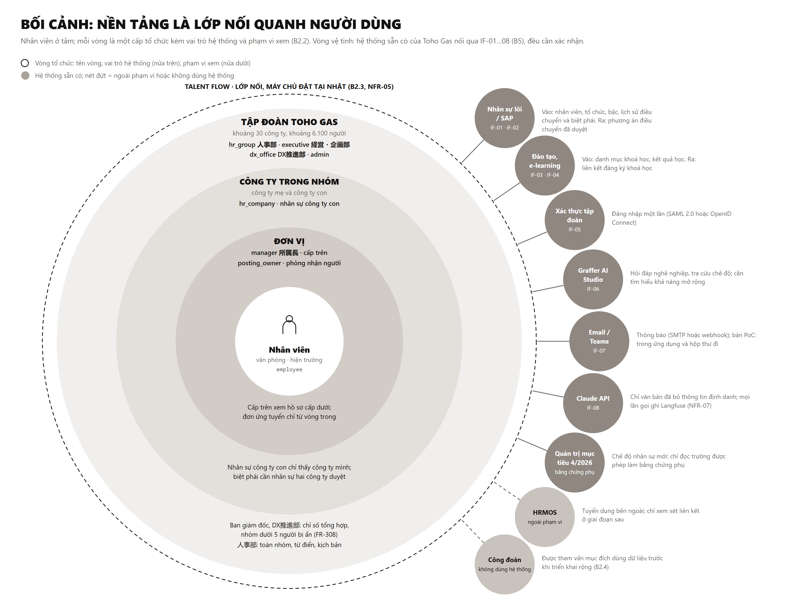
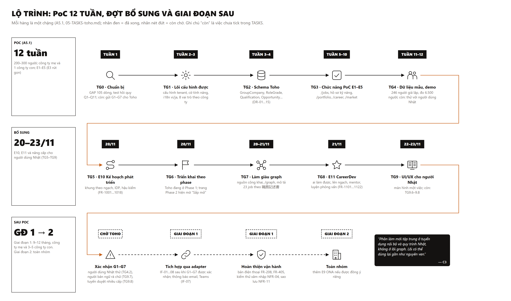
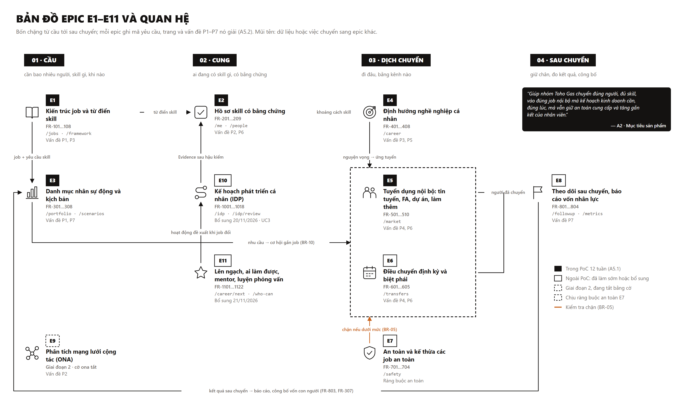
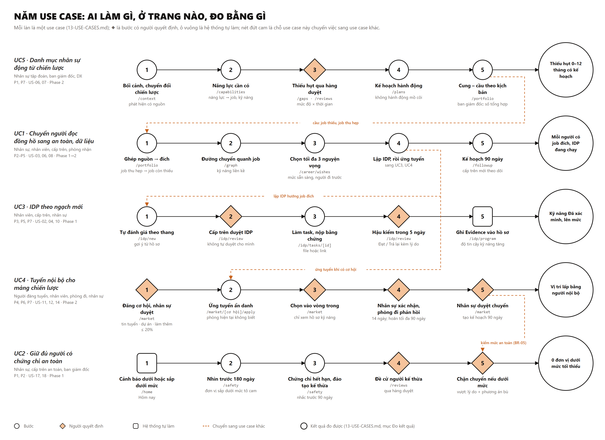
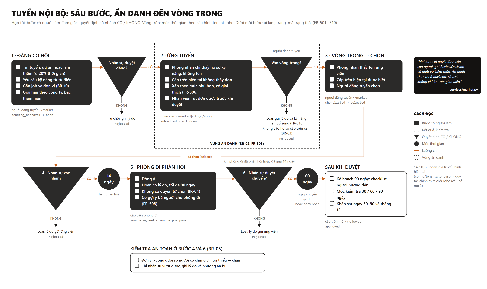
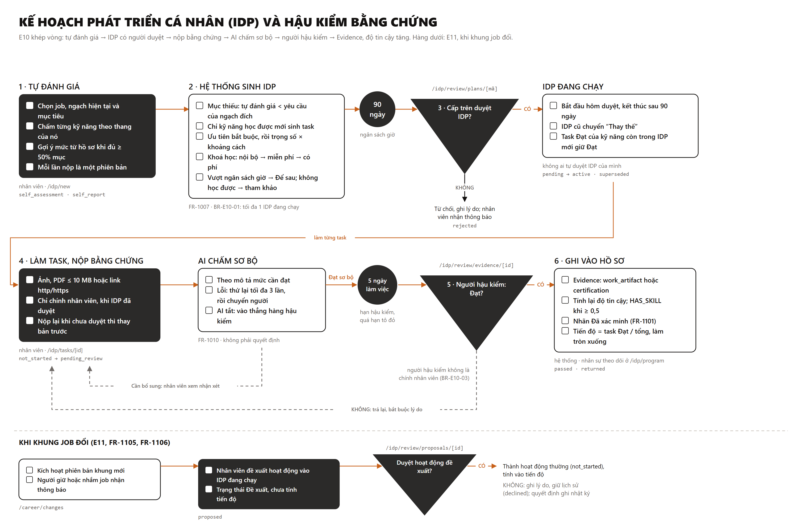
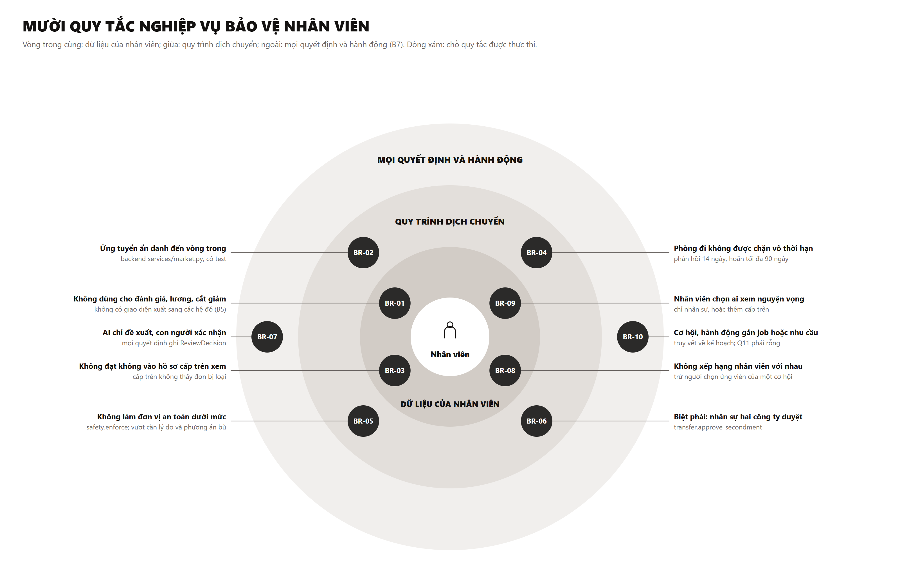
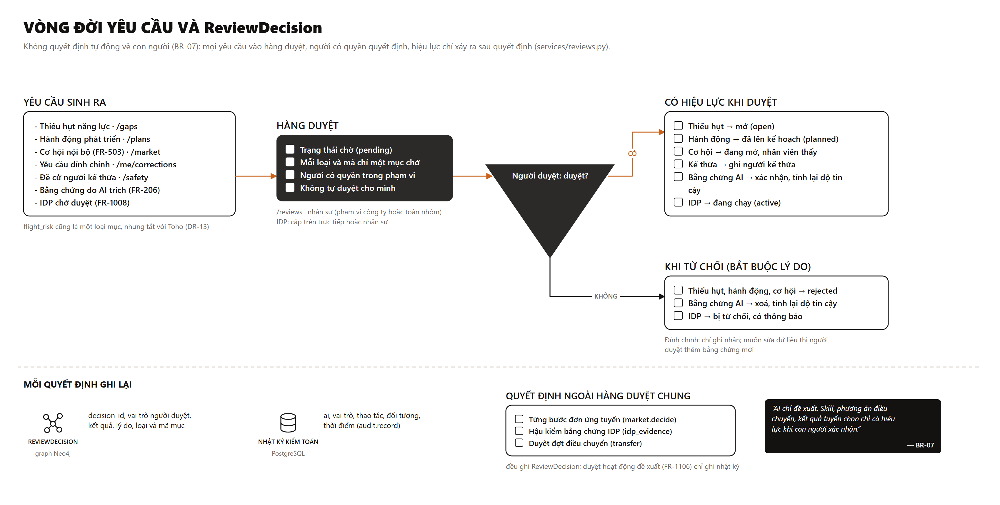

Yêu cầu Toho Gas (SRS) bằng hình
Trích mục “Tổng quan bằng hình” của tài liệu yêu cầu Toho Gas. Bản đầy đủ của tài liệu yêu cầu không xuất bản trên site này.
Tám hình tóm tắt tài liệu; mỗi hình nằm ở mục liên quan bên dưới. Quy ước chung: ◆ hoặc tam giác là bước có người quyết định, nét cam là luồng chính hoặc chỗ chuyển việc, mã FR/BR/IF và đường dẫn trang ghi ngay trên hình. Nguồn vẽ: tools/diagrams/specs/srs.py (sinh SVG, rồi node tools/diagrams/render_svg.mjs xuất PNG).
Bối cảnh và bên liên quan
Nhân viên ở tâm, các vòng đơn vị → công ty → tập đoàn kèm vai trò hệ thống và phạm vi xem; hệ thống sẵn có nối qua IF-01…08 (SRS mục B2).

Lộ trình
PoC 12 tuần TG0–TG4, đợt bổ sung TG5–TG9, việc chờ Toho, giai đoạn 1 và 2 (SRS mục A5.1).

Bản đồ epic E1–E11
Bốn chặng cầu → cung → dịch chuyển → sau chuyển; quan hệ giữa các epic, vấn đề P1–P7 mỗi epic giải (SRS mục A5.2).

Năm use case
UC1–UC5 theo làn: bước, trang, người quyết định, chỗ chuyển việc giữa use case, kết quả đo được (SRS mục A6).

Tuyển nội bộ
Sáu bước, vùng ẩn danh, nhánh loại, hạn 14 / 90 / 60 ngày, kiểm tra an toàn (SRS mục B3.5).

IDP và hậu kiểm
Tự đánh giá → IDP qua duyệt → bằng chứng → AI chấm sơ bộ → hậu kiểm → Evidence; hoạt động đề xuất khi job đổi (SRS mục B3.10).

Mười quy tắc BR
BR-01…BR-10 xếp theo phạm vi bảo vệ, kèm chỗ thực thi (SRS mục B7).

Vòng đời yêu cầu và ReviewDecision
Yêu cầu → hàng duyệt → duyệt / từ chối → hiệu lực; mọi quyết định ghi ReviewDecision và nhật ký (SRS mục B7).
